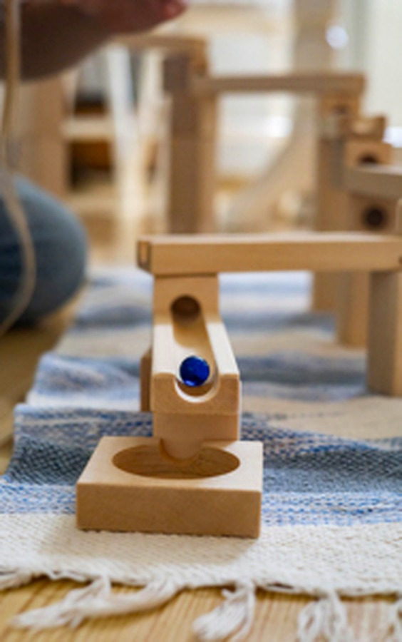
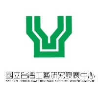
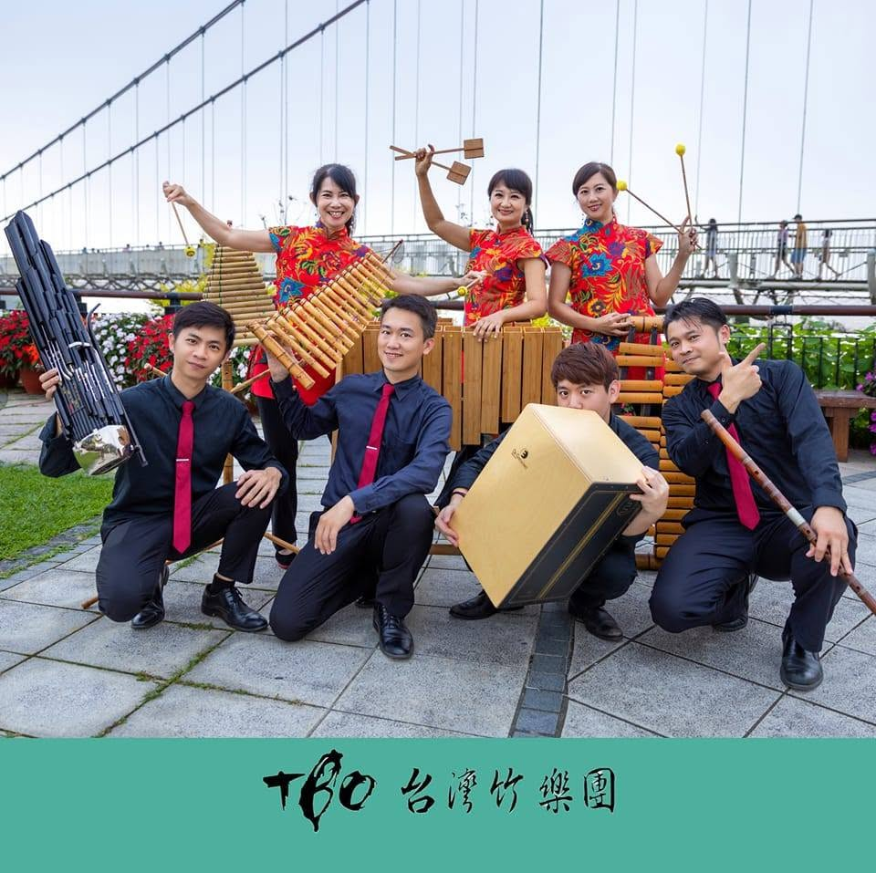
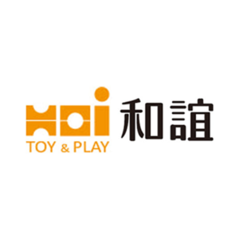
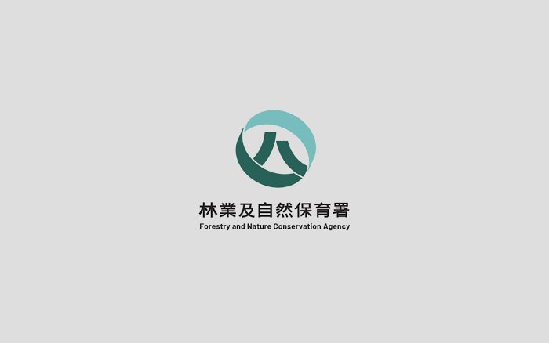

臺灣已有許多小學木育教育案例正在實行中，惟相關小學課程的STEAM創客(Maker)、跨域與SDGs觀念整合，並評估教學成效及研究，目前比較少見。
本計畫擬3年為期，以木育學堂STEAM創客與SDGs的專題式跨領域教學，強調森林與人永續共存的觀念，整合多元教學設計原則與方法，開發與測試具體之木育教案與建議。
第一年計畫，收集國內外市場現有產品，進行分析與歸納，並以設計策略、設計提案、初步草模製作為本階段研究主軸，經由文獻探討、質性研究與訪談、問卷調查等方式，尋找木育學堂、跨域STEAM、創客與SDGs教具研究計畫機會點，並且彙整與分析影響因素之間的相關性，以利提出第二年計畫與成果開發。
第二年計畫，擬以材料與成本評估、原型製作、設計修正及申請專利，並進行系列產品、量產及行銷規劃為本階段重要目標。確認第一年研究成果所訂定開發規格，落實產業鏈縱向整合，及場域體驗之橫向評估。
第三年計畫，研究重點為建置共學平臺，以北區小學為木育學堂玩具設計教學基地，邀請至少5所小學參與計畫推廣，共同制定教學方案流程與成果評量標準，以進行整體教案推廣與調適，積極洽談教學測試場域與教學通路，期能對落實木育玩具設計教育領域有所裨益。

計畫期程
STEAM 教案
合作夥伴
研究發表
福祿貝爾（F. Froebel）視玩具為上蒼之恩物，遊戲讓學生的潛力藉著構想而得以展開（Unfolding），其潛藏之內在得以外在化（Inner-outer）；其次，遊戲活動之刺激，可以引導潛能的進一步發展，使外在環境的經驗得以內化，豐富心靈之內涵，展開另外在內在化（Outer-inner）學習方式。本計畫擬以小學設計思考教學為主軸，嘗試結合遊戲、體感創作、STEAM創客與SDGs等議題，尋找符合本計畫研發方向的機會點。
本計畫以「森林永續、創客實作、跨域共學」為核心，逐步建立木育玩具設計教學與推廣體系，讓每一年都朝向更完整的教育實踐與成果落地發展。
本單元設計廣納STEAM創客與SDGs教案設計。木工學習向度包含：膠合、砂磨、釘敲、組裝、鑽孔、鋸切等六大向度，開發初、中、高階等階段難度課程。
分析木育學堂與小教跨域STEAM創客與SDGs教案發展趨勢。
開發木育跨域STEAM創客與SDGs教案與評量工具，進行測試與評估。
推廣並落實木育學堂STEAM創客與SDGs教案開發於小教特色課程。

國立台灣工藝研究發展中心
台灣竹樂團
和誼創新股份有限公司
農業部林業及自然保育署掌握木育玩具設計計畫最新進展、教案推廣與實作成果，持續更新資訊。
完成第一波木育教案實作測試，並整合學生回饋優化活動流程。
與多所學校共同舉辦創客與SDGs跨域共學工作坊，深化教學交流。
展示新一代木育玩具原型，獲得師生與業界高度回響與合作意向。